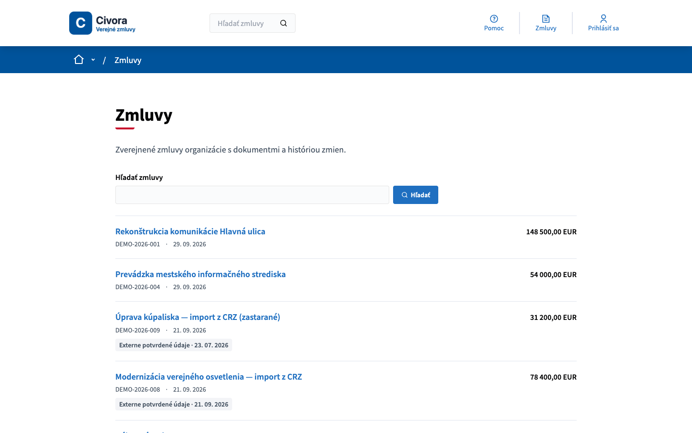
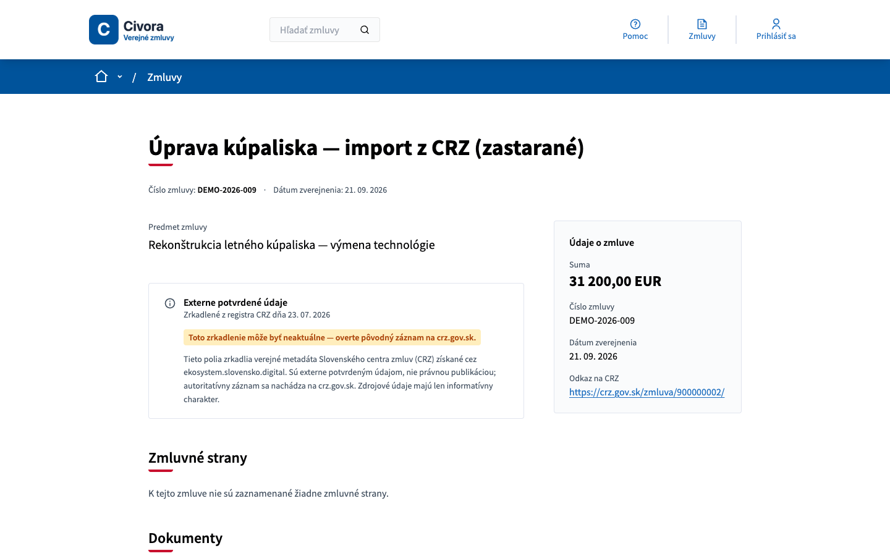
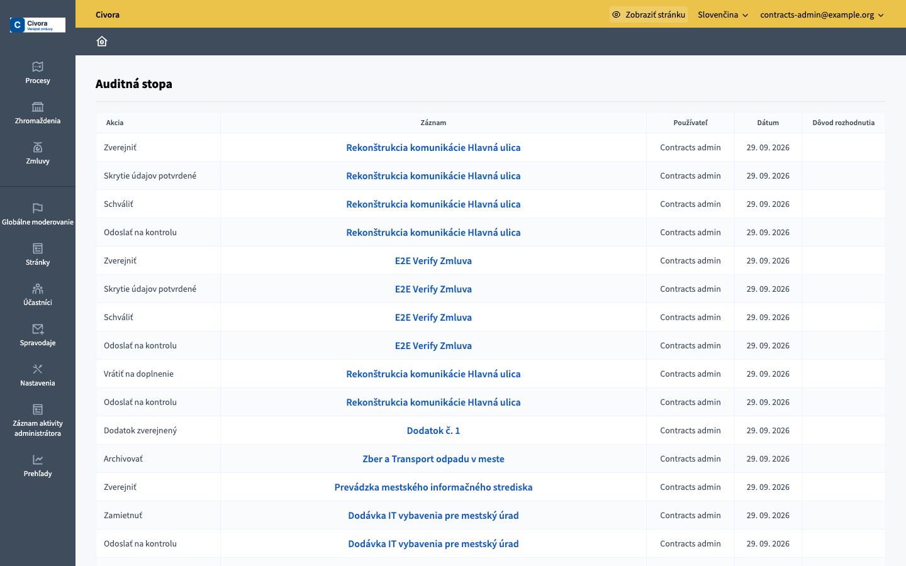

Verejné zmluvy bez chaosu
Návrh, kontrola a zverejnenie zmlúv v jednom nástroji, s verejným katalógom pre občanov. Pre obce, mestá a mestské časti.

- Open sourcePostavené na platforme Decidim (AGPL)
- Vaše dátaZostávajú vaše, bez viazanosti na dodávateľa
- Pilot na 3 mesiaceKedykoľvek ukončiteľný
Zmluvy dnes žijú v e-mailoch, tabuľkách a priečinkoch
Zverejňovanie do CRZ je ručná práca. Pred zverejnením chýba jednotná kontrola a občan nevie, kde zmluvu hľadať.
Civora Zmluvy vedie každú zmluvu rovnakým postupom: kto ju pripravil, kto ju skontroloval a kedy bola zverejnená, to všetko je zapísané. Zmluvy, ktoré už sú v CRZ, sa v katalógu zobrazia automaticky.
Od návrhu po verejný katalóg
Návrh
Editor vyplní údaje o zmluve a pripojí dokumenty.
Kontrola
Recenzent zmluvu posúdi a potvrdí kontrolu osobných údajov.
Zverejnenie
Zmluva sa objaví vo verejnom katalógu aj s dokumentmi.
Dodatky
Zmeny sa vedú ako nové verzie, verejný záznam zostáva úplný.
Čo Civora Zmluvy zvládne
- Schvaľovanie v krokoch
- Editor pripraví, recenzent posúdi, potom nasleduje zverejnenie. Každý krok má dátum a zodpovednú osobu.
- Kontrola osobných údajov
- Pred zverejnením je povinné potvrdenie, že zmluva bola skontrolovaná z hľadiska GDPR.
- Auditná stopa
- Záznam každej operácie: kto, čo a kedy zmenil. Pre kontrolu aj pre vnútornú disciplínu.
- Verejný katalóg
- Prehľadná stránka s vyhľadávaním pre občanov a novinárov, bez nutnosti vlastného webu.
- Prepojenie na CRZ
- Zmluvy už zverejnené v CRZ sa preberajú automaticky. Pre nové vznikne PDF podklad na vloženie do CRZ.
- Verzie a dodatky
- História zmien zmluvy. Zverejnené verzie sa uchovávajú a dodatky zostávajú súčasťou verejného záznamu.
Takto to vyzerá


Všetky obrazovky zobrazujú ukážkové dáta.
Cenník
Pilot na 3 mesiace
Nastavenie, import existujúcich zmlúv a zaškolenie úradníkov. Pilot môžete kedykoľvek ukončiť, dáta zostávajú vaše.
Prevádzka
Pravidelná prevádzka pre jednu organizáciu. Pri ročnej platbe dva mesiace zadarmo.
Inštalácia u vás
Ak potrebujete systém prevádzkovať na vlastnej infraštruktúre.
Ukážeme vám to naživo
30 minút na ukážkových dátach, bez záväzku. Napíšte nám a dohodneme termín, osobne alebo online.
Denys Kozlov · +421 944 926 570 · denys@civora.sk